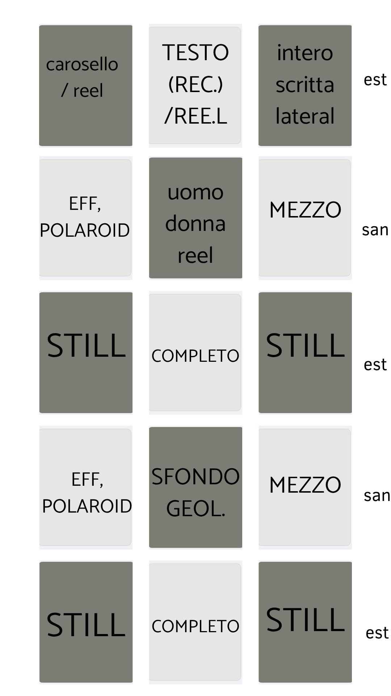
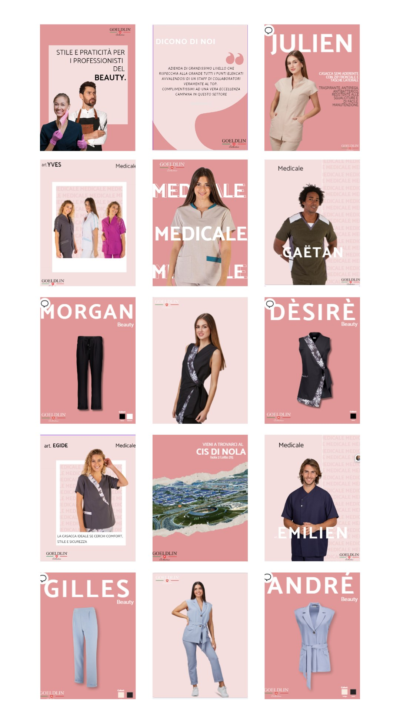
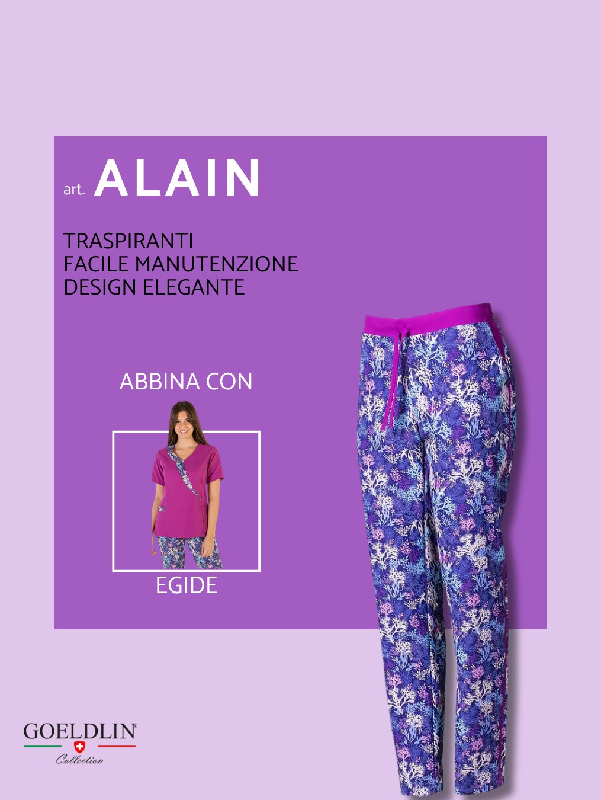
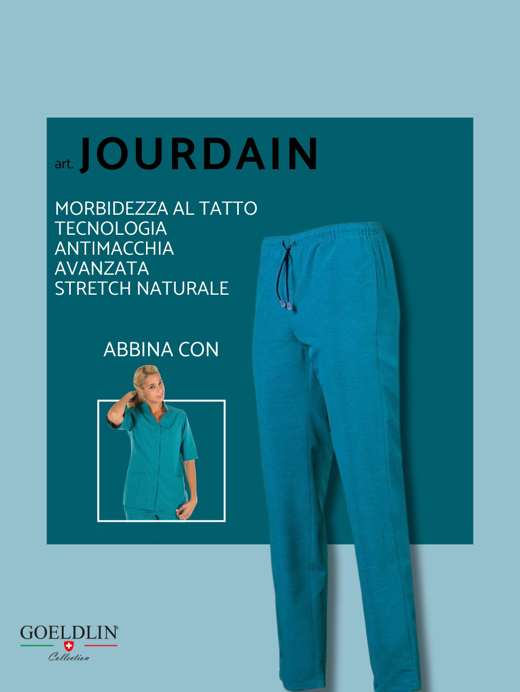
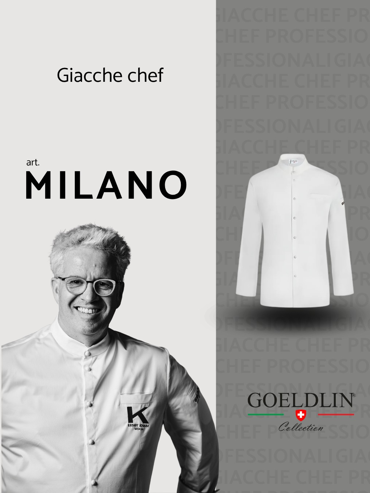
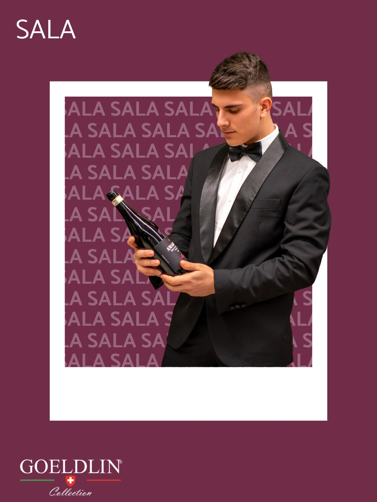
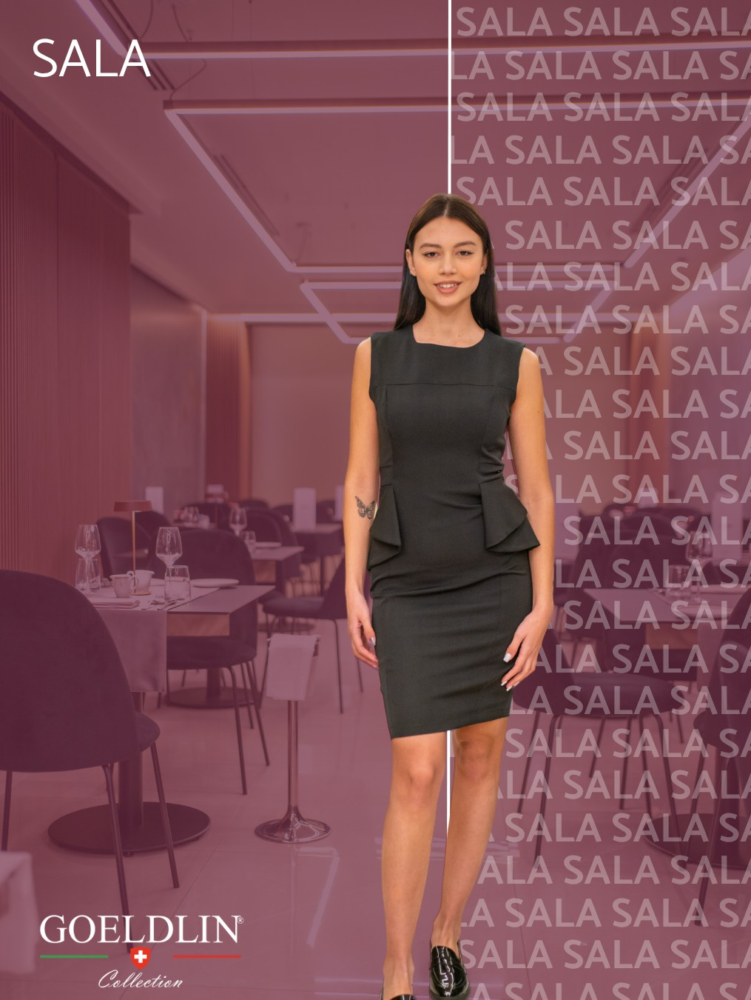

Goeldlin · Social Media Manager, In-house
When more followers wasn't the win
An in-house role at a workwear manufacturer, where the account looked healthy until the data said otherwise.
Overview
Goeldlin brought me in-house to run its social channels: planning the editorial calendar, publishing day to day and managing the community on Instagram, with content cross-posted to Facebook. This time as part of a company structure, coordinating with internal stakeholders rather than running things solo.
The Challenge
The follower count looked fine on paper. But numbers on their own don't tell you if an audience is actually there, or just there. Before building a strategy on top of that number, I needed to know what it was actually made of.
My Role
I worked within the existing company structure: planning content with internal stakeholders, getting it approved, and owning day-to-day publishing. On the community side, I answered messages that came in through Instagram Messenger.
Process
- Audited the entire follower base rather than taking the total at face value.
- Found that roughly half of it was inactive or fake, a finding the client confirmed independently.
- Proposed moving reporting and KPIs away from follower count and onto reach and engagement, the metrics that actually reflect who's watching.
- Kept the editorial calendar and community management running throughout, so the audit didn't slow anything down.
Where it stands
The client adopted the new reporting approach, and the numbers backed it up. Over one reporting month, reach grew to 7,040 (+666.9% on the previous period) and interactions rose to 138 (+1154.5%), while the engagement rate nearly quadrupled, from 0.13% to 0.51%. The best-performing content was a single Reel, which pointed the calendar toward more video going forward. It's a small shift on paper, reach and engagement instead of a follower count, but it changes what "working" actually means for the account.
Social graphics
Alongside strategy and planning, I also designed the content itself. Left: the format grid I used to plan each post. Right: finished posts for the Medical and Beauty workwear line.


Product content
A sample of product carousels I designed across Goeldlin's lines: Medical and Sala & Cucina.





Next project
Editorial care for a healthcare brand →